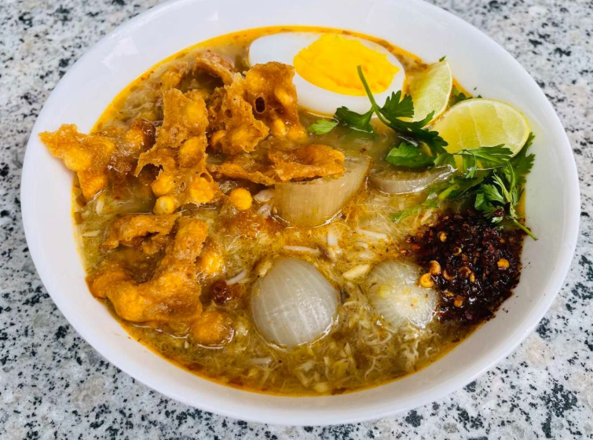

1.Boil the fish in a pot of salted water until it is fully cooked. Once done, remove the fish, flake the flesh into small pieces, and set it aside. Keep the fish stock for later use.
2.In a large pot, heat the oil over medium heat. Add the chopped onions, garlic, ginger, and lemongrass, and sauté until the mixture is fragrant and golden.
3.Stir in the turmeric powder, paprika, and fish sauce, cooking for 1-2 minutes to blend the flavors.
4.In a small bowl, mix the chickpea or rice flour with a little water to make a smooth paste. Gradually add this paste to the pot, stirring continuously to avoid lumps.
5.Pour the reserved fish stock into the pot and bring it to a gentle simmer. Add the flaked fish, banana stem (if using), and dried shrimp powder. Let the soup simmer for 15-20 minutes, stirring occasionally to ensure everything is well combined.
6.While the soup is cooking, prepare the rice noodles according to the package instructions. Once cooked, drain the noodles and set them aside.
7.To serve, place a portion of the cooked noodles in a bowl. Ladle the hot fish soup over the noodles and top with garnishes such as hard-boiled eggs, crispy fried onions, chopped coriander, lime wedges, and chili flakes for added flavor.